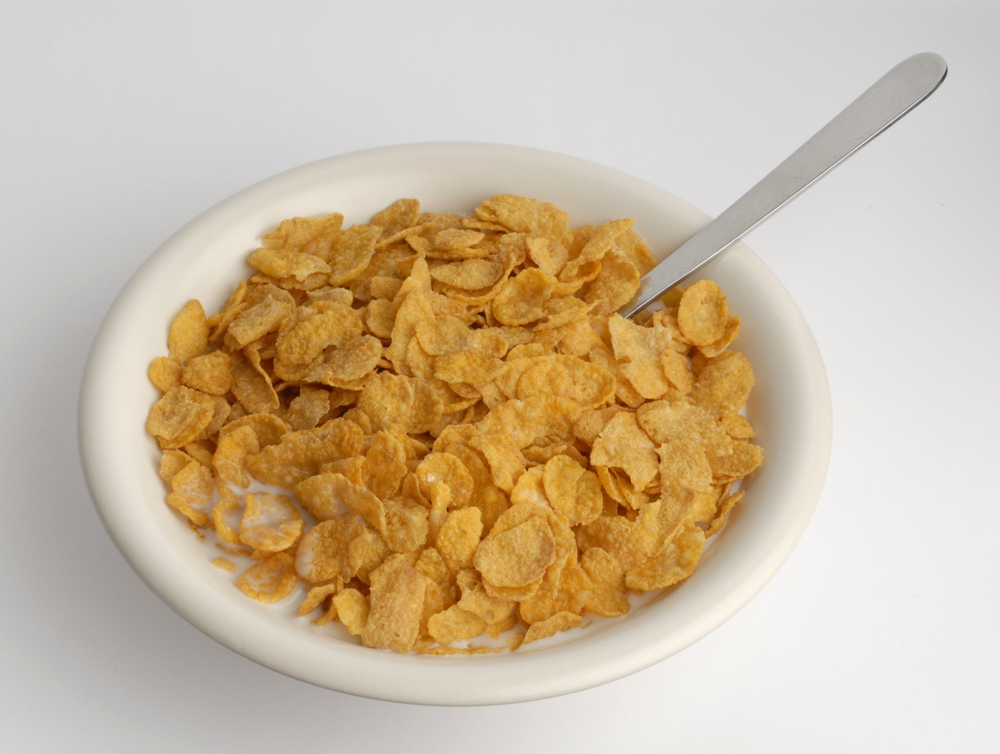

Cornflakes

What, I couldn't find a smaller cornflake image?
Description
Unless your name is Homer Simpson, this is just about as easy as it gets.
Ingredients
- Your every-day, run of the mill cornflakes.
- Milk (Cow/soy/almond/oat whatever floats your boat - I don't care, I hate milk).
Steps
- Add cornflakes to your favourite bowl.
- Add your milk of choice.
- If - and only if - your cornflakes don't immediately catch on fire, eat and enjoy.